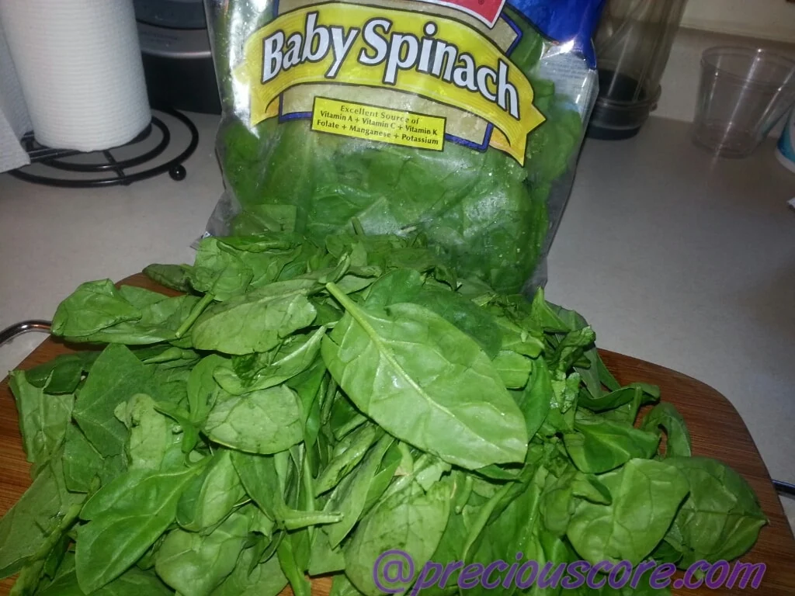

How to Prepare Fufu and Eru
African most delicious dish

Ingredients
- Eru (also known as okazi)
- Spinach (waterleaf)
- Beef, cow skin

- Palm oil

- Pepper

- Maggi
- Salt
if you are using dried Eru, start by soaking it in water
Wash yoyr meat and put in the pot to boil
While the meat boils, chop your spinach or waterleaf and set aside
When your meat is half-boiled, season with salt. When it is cooked, add in the spinach and start stirring.

Then you drain Eru and add to the pot.The small liquid from the spinach will make the Eru soft
Add in your fish and mix

Then add the oil, seasoning cube and lastly crayfish
Stir well and Voila, Eru is ready. Serve with Water Fufu
Nutritional Info
The nutritional information for Eru varies depending on the type of Eru,
such as soup, cheese, or chesse spread